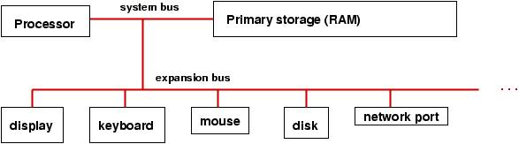

What is Computer Architecture
links:
computer architecture main page
introduction for computer architecture
What is Computer Architecture
How to Become a Computer Architect
The role of computer engineering in our lives

A genera-purpose computer has these parts:
1-processor: the brain that does arithmetic, responds to incoming information, and generates outgoing information.
2-primary storage (memory or RAM): the scratchpad that remembers information that can be used by the processor.
It is connected to the processor by a system bus (wiring).
3-system and expansion busses: the transfer mechanisms (wiring plus connectors) that connect the processor to primary
storage and input/output devices.
A computer usually comes with several input/output devices: For input: a keyboard, a mouse For output, a display (monitor)
a printer For both input and output: an internal disk drive, memory key, CD reader/writer, etc.
as well as connections to external networks.